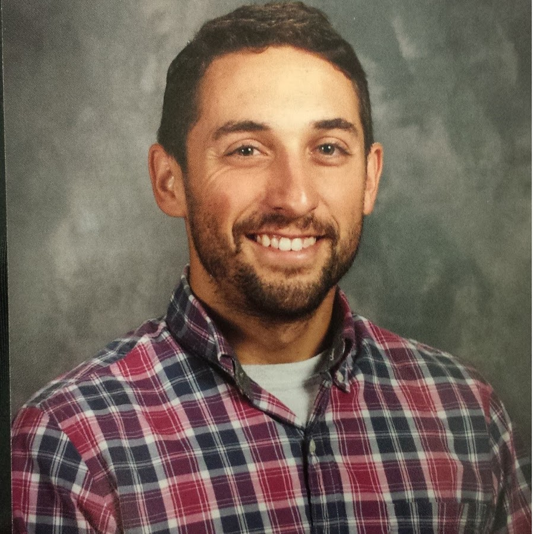

Danny Calise
Daniel Calise earned a Bachelor’s Degree from Temple University in January of 2009, with a major in Secondary Education: English. He briefly worked in a Philadelphia high school before spending two years as an Oral English teacher at Guangdong Peizheng College from 2009 to 2011. He then returned to Los Angeles and became a homeschool teacher for two brothers in Beverly Hills. He taught all subjects to one 5th grade boy and one 11th grade boy. Following this, Daniel relocated to Austin, Texas for two years, where he taught 10th grade English at an inner city high school. Finally, Daniel once again returned to Los Angeles where he currently teaches AP English Literature at Executive Preparatory Academy of Finance in Gardena. His hobbies include guitar, piano, traveling, and cats. His website is DannyCalise.com